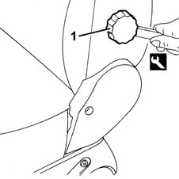
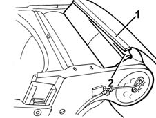
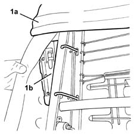
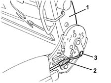
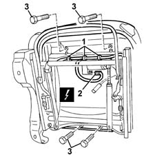
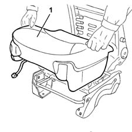
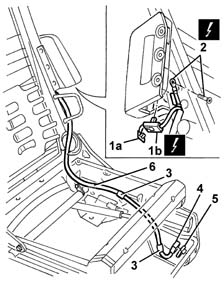
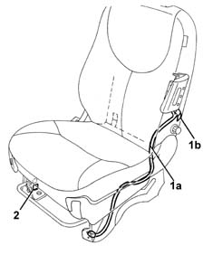
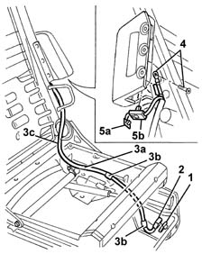

5580C86 side bag wiring harness (one) lh or rh - r r or replace
- Path
- Procedures > 55 ELECTRICAL EQUIPMENT > 5580 SPECIAL ACCESSORIES > 5580C AIR BAG SYSTEM > 5580C86 side bag wiring harness (one) lh or rh - r r or replace
- Kind
- repair procedure (removal / refitting; the operation number is the code)
- Applies to
- all engines; all production periods
- Interactive page
- https://sloeber94.github.io/elrnDB-fMltpl/en/#/2891981
Applies to: all engines; all production periods
Applies to: all engines; all production periods; only with equipment: ESP
 Removing
Removing
 Refitting
Refitting7045A10 l/h or r/h front seat (one) - r+r
7045B10 l/h or r/h front seat head restraint - r+r
7045A42 l/h or r/h front seat guard (one) - r+r (right and left)
1. Remove the knob using the special tool.
 | Name | Country |
|---|---|---|
1 | Scraper blade | 1.878.077.000 |

Applies to: all engines; all production periods; only with equipment: ESP
1. Disconnect the rear bottom end of the squab cover. Start from one end.
2. Disconnect the front end from the frame retainer.

Applies to: all engines; all production periods; only with equipment: ESP
1. Remove the cover (1a) from the upholstery to gain access to the Air Bag module (1b).

Applies to: all engines; all production periods; only with equipment: ESP
1. Fold the backrest over using the control lever.
2. Disconnect the outer casing.
3. Disconnect the end of the backrest control cable.

Applies to: all engines; all production periods; only with equipment: ESP
1. Working under the seat, release the cable from the retainers.
2. Disconnect the electrical connection for the seat lifting motor.
 | Name | Connector |
|---|---|---|
2 | Driver's seat ride motor |
3. Undo the cushion bolts.

Applies to: all engines; all production periods; only with equipment: ESP
1. Remove the cushion complete with wiring.

Applies to: all engines; all production periods; only with equipment: ESP
1. Release the safety retainer (1a), then disconnect the electrical connection (1b).
| Name | Connector |
|---|---|---|
1b | Driver's Side Bag |
| Name | Connector |
|---|---|---|
1b | Passenger Side Bag |
2. Disconnect the earth lead from the frame.
| Name | Connector |
|---|---|---|
2 | Earth on seat for driver's side Air Bag |
| Name | Connector |
|---|---|---|
2 | Earth on seat for passenger Side Air Bag |
3. Disconnect the wiring retaining bands.
4. Remove the base of the electrical connection from the frame.
5. Disconnect the electrical connection from the base.
6. Remove the wiring from the frame.

Applies to: all engines; all production periods; only with equipment: ESP
Refitting
RemovingCheck that the wiring is intact and shows no signs of damage.
If a new wiring is being fitted, attach the labels as described below.
1. Detach the removable part (1b) of the adhesive label from the new wiring (1a). Place a copy of the label (1b) in a specific file containing the vehicle details (model, registration data, chassis number) and the serial number of the old squab cover. This file should be kept for future checks.
2. Apply the original label (1b) to the inner part at the bottom of the seat, where there are already the equivalent labels for seat, side Air Bag module and backrest cover.

Applies to: all engines; all production periods; only with equipment: ESP
1. Connect the electrical connection to the base.
2. Fit the base of the electrical connection to the frame.
3. Position the wiring (3a) on the frame and connect it using the retaining bands (3b).
4. Connect the earth lead to the frame.
5. Connect the electrical connection (5b), then engage the safety retainer (5a).

Applies to: all engines; all production periods; only with equipment: ESP
Position the cushion, complete with wiring, and secure it using the bolts.
Connect the electrical connection for the seat lifting motor.
Connect the connections for the wiring.
Connect the end and the outer casing for the backrest control cable.
Completely fit the backrest cover on the upholstery.
Connect the front end of the cover to the frame retainer.
Also connect the rear end of the cover.
Mould the cover onto the padding.
Fit the knob and line up the reference.
7045A42 l/h or r/h front seat guard (one) - r+r (right and left)
Topics linked from this page (9)
- 5580C AIR BAG SYSTEM
- 7045A10 l/h or r/h front seat (one) - r+r
- 7045A42 l/h or r/h front seat guard (one) - r+r
- 7045B10 l/h or r/h front seat head restraint - r+r
- C51 Earth on seat for driver's side Air Bag
- C52 Earth on seat for passenger Side Air Bag
- N39 Driver's seat ride motor
- Q30 Driver's Side Bag
- Q31 Passenger Side Bag